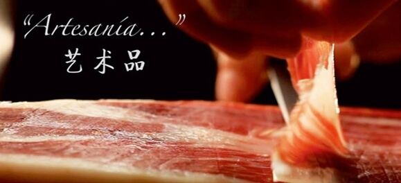

西班牙一个神秘的国度，有着热情似火的民族，璀璨的文化艺术，是世界第二大旅游国度。
西班牙人的慵懒在世界上是出了名的。不管是他们的生活习惯，还是工作方式，甚至是经济发展和社会建设，似乎都在享受一种慢节奏的过程。他们一年至少有150天在放假，算起来每个星期只上4天班。更有趣的是，为了适应人们的习惯，几乎所有的城市都设计有一条专供黄昏以后散步用的街道。不光是这些，西班牙人爱睡午觉也是大名鼎鼎。他们还把睡午觉当作一件神圣的正经事，一定要穿上睡衣，做过祷告，躺在床上好好睡足一两个小时。
在西班牙素来就有着“国酒”这一美誉的雪利酒，盛产于西班牙南部的赫雷斯市，赫雷斯不仅是雪利酒的发源地，同时也是今日雪利酒的生产重镇。根据雪利酒法定产区的规定，这个酒的产区只限定在西班牙南端的一隅，而这也是欧洲最南边的葡萄酒产区，其中又以赫雷斯，德拉弗龙特拉、圣玛丽亚港、圣路卡，巴拉三个城市为核心，构作出一般所谓的雪利酒三角区。因为英国人也特别喜爱它，所以就用这一地域的英文名称“Sherry”(即“王子”之意)来作为这种美酒的正式命名了。
在烹饪和入药方面都有很大的作用，但她的原产地并不是西藏。由于古代该特产香料有西藏进入中国，故一直被称为藏红花。地中海地区最早种植藏红花，西班牙也是全世界最重要的藏红花产地，性价比也是同类产品中相对较高的。
西班牙也被誉为“世界橄榄油王国”，安达卢西亚特级橄榄油在安达卢西亚自治区已经诞生了一百六十多年了，有自己庞大的种植园，出产的橄榄油主要供给全国各大星级酒店，在当地享有声誉。橄榄油主要可用于煎炒，烧烤，凉拌等。
伊比利亚猪肉（通常被称为“黑蹄”patanegra）火腿是一种西班牙传统的有法定产区的生火腿，在西班牙的美食中占据决定性的地位。肉源来自伊比利亚种（cerdoibérico）的黑猪。也被称作伊比利亚生火腿。不要与塞拉诺火腿（jambon serrano）搞混了。两者生产条件甚至产地都相同，但塞拉诺火腿来自白猪。
与伊比利亚火腿齐名的奶酪是西班牙人日常生活中不可缺少的食物，如果法国人认为奶酪是法国的骄傲，那他们真是太骄傲了，其实他们的邻居西班牙的奶酪一点也不差，只是这位邻居太朴实，不像他们那样会做Marketing而已，各式各样的奶酪加起来不少于200种，尤其是Queso Manchego（拉曼查奶酪）。要出口到半个地球之远的中国的话，Queso Manchego是最聪明的选择，拉曼查地区的气候极端恶劣,这里的植物能承受炎热的夏天和冬天破坏性的霜冻。也只有一种羊能生长在这个环境，羊奶自然也与众不同，这就是该地区出产世界上独一无二的奶酪的主要因素，这里的奶酪已经有超过2000年的历史。尽管有人试着在其他地方生产这种奶酪，可是最远也只能在拉曼查和其他省份的交界地带。
得益于西班牙设计师很高的国际声誉，时装行业一直是西班牙发展最迅猛的行业，而且在国际上取得了极大的成功。
ZARA：创立于1975年，最具大众影响力的西班牙流行服饰品牌，包括女装、男装和童装。
MNG（Mango）：与ZARA齐名的西班牙流行品牌。在北京国际贸易中心一层及大连、深圳设有专卖店。
Custo Barcelona：1980年由CUSTO和DAVID DALMAU兄弟创建的年轻品牌。在北京东方广场一层设有专卖店。
Pull&Bear：创立于1991年的年轻休闲服饰品牌。
Oysho：INDITEX集团旗下刚刚创立1年的内衣品牌，设计时尚，价位在百元人民币左右。
Bershka：INDITEX集团旗下年轻前卫的休闲女装品牌，设计风格充满街头感。
LOEWE：西班牙最具知名独度的皇家皮具品牌。在北京国际贸易中心一层设有专卖店。
YANKO：以皮鞋制造享有盛誉的西班牙皇家品牌。在北京国际贸易中心一层设有专卖店。
ADOLFO DOMINGUES：有定位于中高档的“ADOLFO DOMINGUES”系列和年轻系列“U”。
CARAMELO：中高档西班牙服装品牌，面向25到45岁的女性，讲究精工细制，风格趋向高雅成熟。
TINTORETTO：西班牙高级女装成衣品牌，为享誉欧洲的INDUYCO集团旗下主打品牌，面向20至40岁的都市中高档收入白领女性。
Massimo Dutti：创立于1985年，以男装起家，1995年发布女装系列。
ORANGE家乐，更有家的味道